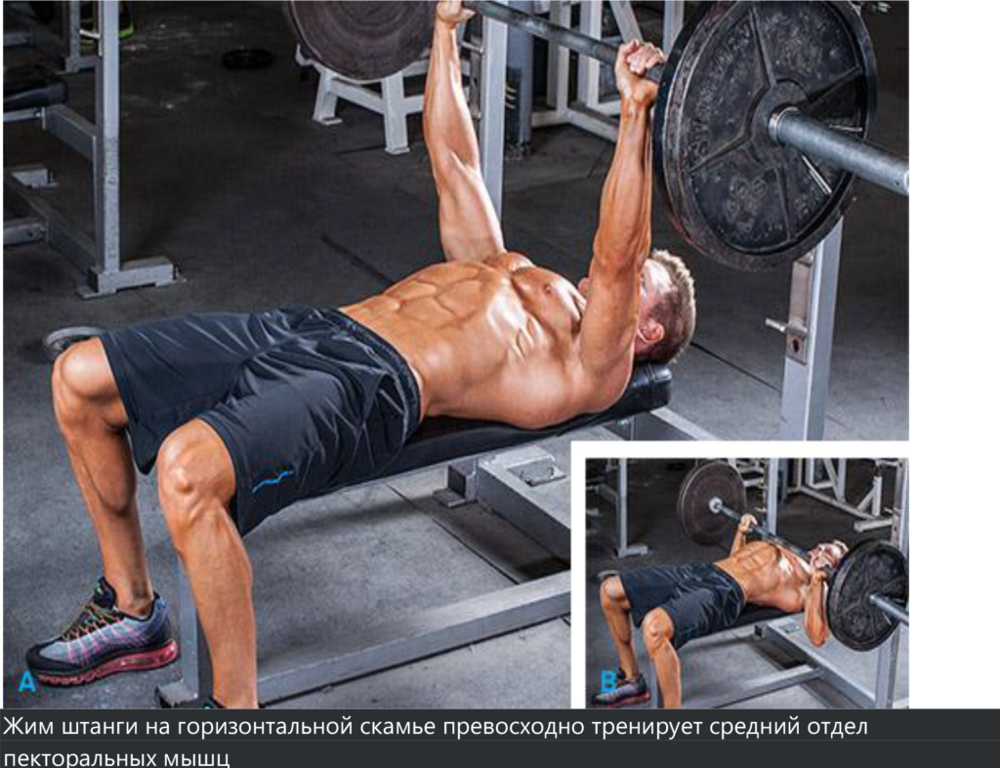

Как начинающие могут нарастить массивную грудь? Попробуйте эти 5
отличных программ тренировок для наращивания грудной мускулатуры и
узнаете сами.
Руководство по наращиванию пекторальных мышц для начинающих
Ваша грудь напоминает скорее лист фанеры, чем гору мускул, о которой
вы всегда мечтали? Вы проводите бесконечные часы, выполняя жим
лежа, но размер груди не увеличивается? Вы уже начали думать, что вам
просто не суждено иметь развитые грудные мышцы? Немедленно
прекратите, вы ошибаетесь.
Я не могу пообещать вам, что у вас когда-нибудь будет грудь, как у
великого Арнольда Шварценеггера, но я могу пообещать вам, что если вы
прислушаетесь ко мне, то сможете развить свою грудь до внушительных
размеров.
Далее в статье я расскажу вам об анатомии груди, ее функции,
расположении в теле и о некоторых упражнениях для каждого отдела
грудных мышц. Наконец, и именно этого вы и ждете, я поделюсь с вами
пятью моими любимыми программами тренировок, которые помогут вам
превратить вашу плоскую грудь в накаченные мускулы.
Анатомия Груди
Грудь состоит из двух мышц, которые вместе обеспечивают работу
грудной клетки. Эти мышцы — большая пекторальная мышца и малая
пекторальная мышца. Как правило, малая пекторальная мышца
расположена непосредственно под большой пекторальной мышцей.
Расположение:
Начинается во внутренней половине ключицы, проходит через грудину к
подмышечной ямке (Плечевая кость).
Функции:
Выполняет 3 различные функции:
Вращает плечо
Поднимает и опускает руку по бокам
Выполняет движение армрестлинга
Упражнения:
Жим штанги и махи гантелями
Жим штанги на горизонтальной скамье превосходно тренирует средний отдел
пекторальных мышц
Рекомендации по наращиванию мышц груди
Хотя грудь состоит из единой мышечной массы, ее необходимо
тренировать, как если бы она состояла из трех частей. Верхняя, средняя и
нижняя части груди лучше прокачиваются в зависимости от угла, под
которым выполняются упражнения.
Верхняя часть груди лучше всего развивается при выполнении
упражнений на скамейке под углом 30–45°. Например, жим штанги и жим
гантелей или сведение-разведение рук с гантелями на наклонной скамье
— это отличные упражнения для накачивания верхнего отдела груди.
Средняя часть груди получает наилучшую стимуляцию, если упражнения
выполняются на горизонтальной скамье. Например: жим штанги и жим
гантелей или сведение-разведение рук с гантелями на горизонтальной
скамье превосходно тренируют средний отдел пекторальных мышц.
Нижнюю часть груди лучше всего тренировать при помощи упражнений,
выполняемых на скамье с обратным наклоном (30–45°). Например: жим
штанги и жим гантелей или сведение-разведение рук с гантелями на
скамье с обратным наклоном замечательно подходят для увеличения
нижнего отдела пекторальных мышц.
Я считаю, что все отделы грудных мышц сначала лучше всего реагируют
на низкое (4–6) или среднее (8–12) количество повторений. Я очень редко
включаю большое количество повторений для начинающих, так как
считаю, что более тяжелые веса помогают заложить прочное основание,
которое нужно начинающим. Я также уверен, что в начале тренировок
лучше сфокусироваться на свободных весах, особенно если грудь — ваше
слабое место. На мой взгляд, свободные веса гораздо лучше развивают
пекторальные мышцы, чем тренажеры.
Теперь, когда вы понимаете, какие мышцы составляют грудную
мускулатуру, и знаете об их функциях, расположении и упражнениях,
необходимых для их роста, давайте рассмотрим некоторые программы
тренировок, которые помогут вам нарастить объем груди.
Все упражнения должны выполняться точно по правилам, потому что
неверное выполнение упражнений становится привычкой, которая будет
преследовать вас и помешает достичь больших результатов, или в худшем
случае приведет к травме.
5 моих любимых программ тренировок по наращиванию грудных мышц
День верхнего отдела пекторальных мышц
Жим штанги на наклонной скамье: 3 подхода по 4–6 повторений
Жим гантелей на наклонной скамье: 3 подхода по 8 повторений
Сведение-разведение рук с гантелями на наклонной скамье: 3 подхода по
8–12 повторений
Отжимания от пола (опускание должно занимать 5–10 секунд): 3 подхода
по 12 повторений

День среднего отдела пекторальных мышц
Жим штанги на горизонтальной скамье: 3 подхода по 4–6 повторений
Жим гантелей на горизонтальной скамье: 3 подхода по 8 повторений
Сведение-разведение рук с гантелями на горизонтальной скамье: 3
подхода по 8–12 повторений
Отжимания от пола (опускание должно занимать 5–10 секунд): 3 подхода
по 12 повторений
День нижнего отдела пекторальных мышц
Жим штанги на скамье с обратным наклоном: 3 подхода по 4–6
повторений
Жим гантелей на скамье с обратным наклоном: 3 подхода по 8
повторений
Сведение-разведение рук с гантелями на скамье с обратным наклоном: 3
подхода по 8–12 повторений
Отжимания от пола (опускание должно занимать 5–10 секунд): 3 подхода
по 12 повторений
День штанги
Жим штанги на горизонтальной скамье: 3 подхода по 4–6 повторений
Жим штанги на наклонной скамье: 3 подхода по 4–6 повторений
Жим штанги на скамье с обратным наклоном: 3 подхода по 4–6
повторений
Отжимания на брусьях – вариант для проработки грудных мышц: 3
подхода по 8–12 повторений
День гантелей
Жим гантелей на наклонной скамье: 3 подхода по 8 повторений
Жим гантелей на скамье с обратным наклоном: 3 подхода по 8
повторений
Жим гантелей на горизонтальной скамье: 3 подхода по 8 повторений
Отжимания на брусьях – вариант для проработки грудных мышц: 3
подхода по 8–12 повторений
Эти 5 программ тренировок я использую до сих пор, чтобы поддерживать
грудную мускулатуру, которая всегда была моим слабым местом. Базовые
упражнения со свободными весами лучше всего подходят для того, чтобы
получить плотную мышечную массу, к которой вы всегда стремились.
Заключение
Я хочу, чтобы вы выбрали одну из указанных выше программ и
попробовали ее в течение 4–6 недель, пытаясь увеличивать вес с каждой
тренировкой (по-прежнему точно выполняя упражнение), затем
переходите к следующей программе тренировок и повторите этот
процесс.
А теперь самое интересное — пришло время «Наращивания
пекторальных мышц». Теперь вы все знаете, программа тренировок
изложена, поэтому просто «ИДИТЕ КАЧАЙТЕСЬ».
Удачи!